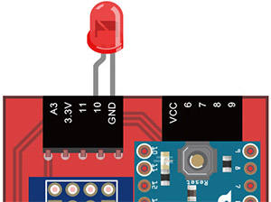
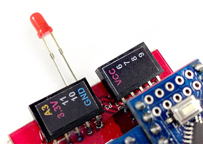

範例教學 1：控制單顆 LED 燈
在基本的 Arduino 傳感器控制範例裡頭，控制單顆 LED 燈通常都是作為第一個範例使用，為什麼呢？因為這個範例最容易上手，也最容易藉由 LED 的明暗來測試程式是否有寫錯，因此進入了 Webduino 的世界之後，同樣也使用 LED 來作為第一個範例，而撰寫的程式也更為簡單，就像控制一張網頁圖片切換一樣的容易。
範例影片展示
如何接線與實作
-
1. 接上 LED
將 LED 的長腳接在 10 的位置，短腳接在 GND 的位置，接完 LED 之後接上電源。  -
2. 完成後的實際長相

範例程式 ( 點選「範例」預覽 )
HTML：
<!DOCTYPE html>
<html>
<head>
<meta charset="utf-8">
<meta name="viewport" content="width=device-width, user-scalable=yes, initial-scale=1, maximum-scale=1">
<title>LED 燈亮起來</title>
<script src="//webduino.io/components/webcomponentsjs/webcomponents.js"></script>
<link rel='import' href='//webduino.io/components/webduino/web-arduino.html' />
<link rel='import' href='//webduino.io/components/webduino/wa-led.html' />
<link rel='stylesheet' href='../../bower_components/normalize.css/normalize.css' />
</head>
<body>
<div id="msg" class="waiting">訊息: </div>
<form>
<label>device : <input type="text" id="device"></label>
<button class="setting" id="set">設定</button>
</form>
<div id='light' class="off">
<img src='http://i.imgur.com/T5H4MHE.png'></img>
<img src='http://i.imgur.com/8qFj2Ou.png'></img>
</div>
<web-arduino id='board'>
<wa-led id='led' pin='10'></wa-led>
</web-arduino>
<script src="js/main.js"></script>
</body>
</html>
CSS：
#msg, form {
font-size: 20px;
margin: 5px;
}
#device {
max-width: 100px;
height: 34px;
}
#set {
width: 70px;
height: 40px;
}
#msg.default::after {
content: "None!";
}
#msg.waiting::after {
content: "Loading...";
}
#msg.ready::after {
content: "Ready!";
}
#msg.setting::after {
content: "Setting...";
}
#msg.set::after {
content: "Complete!";
}
img {
width: 100%;
max-width: 480px;
}
.off img:last-child, .on img:first-child {
display: none;
}
JS：
window.addEventListener('WebComponentsReady', function () {
var setBtn = document.getElementById('set'),
device = document.getElementById('device'),
board = document.getElementById('board');
msg.className = "ready";
device.setAttribute('value', localStorage.device || "");
setBtn.addEventListener('click', function (e) {
msg.className = "setting";
board.device = device.value;
board.on('ready', ready);
board.init();
localStorage.device = device.value;
e.stopPropagation();
e.preventDefault();
return false;
}, false);
function ready() {
var led = document.getElementById('led'),
light = document.getElementById('light');
led.on();
light.className = 'on';
msg.className = "set";
};
}, false);